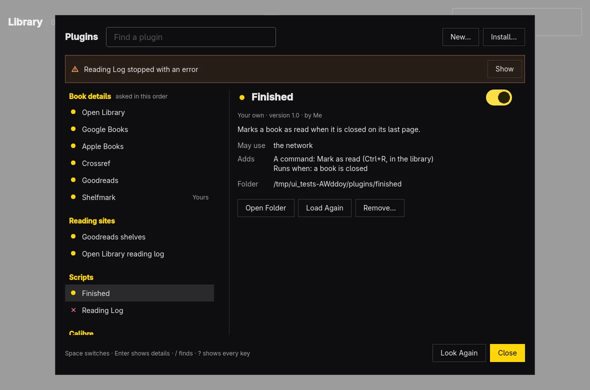
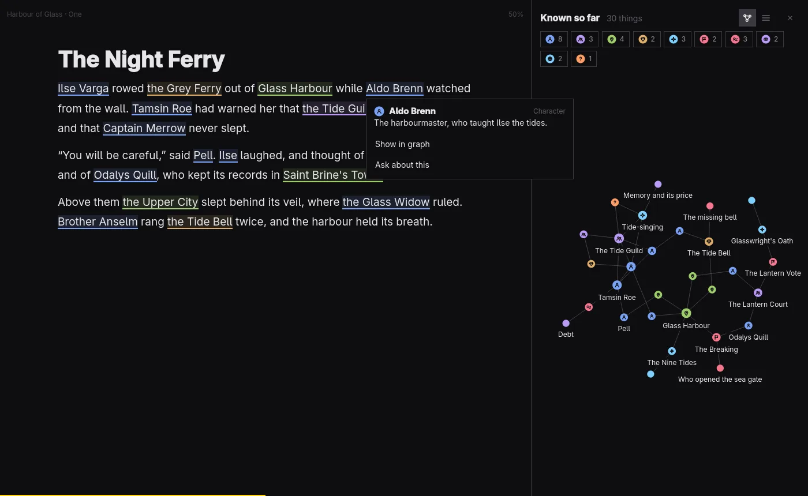

Storyteller
ReviewedWrites an original book for you, chapter by chapter, as you read it. Start one from the shelf; steer it, ask the author, branch it.
omabook plugin add storyteller
Plugins add formats, panels, commands and whole ways of using the library. Omabook lists them itself: press P then I, or run omabook plugin search. This page is built from the same two lists.
Writes you a book. Say what you are in the mood for: it builds a world, invents the people, plans a plot with twists seeded before they pay off, and writes chapter one. The next is written while you read the one before. Everything it writes is original by rule. It is also a worked example of a plugin.
omabook plugin add storyteller

Notebooks of pages on paper: lined, squared, dotted, music staves or Cornell. Write with a pen, type, add pictures and recordings. Handwriting is read, recordings are transcribed, and a page links to the passage you were reading. Export as PDF or Markdown.
The picture is the reader; the real page will show a demo notebook. Your own notebooks never appear on this site.
omabook plugin add notebooks

2 in the registry · 0 more from GitHub at the last build
Writes an original book for you, chapter by chapter, as you read it. Start one from the shelf; steer it, ask the author, branch it.
omabook plugin add storyteller
Notebooks of pages on paper (lined, squared, dotted, blank, music staves or Cornell), beside the books you read. Private unless you share them.
omabook plugin add notebooks
Any public repository with the topic omabook-plugin and a valid plugin.json is listed here at the next build, with its stars and last update. Not reviewed: you read what it asks before you install.
omabook plugin add your-plugin
The last card shows how a plugin found by topic appears. Write your own: press N in the plugin manager.